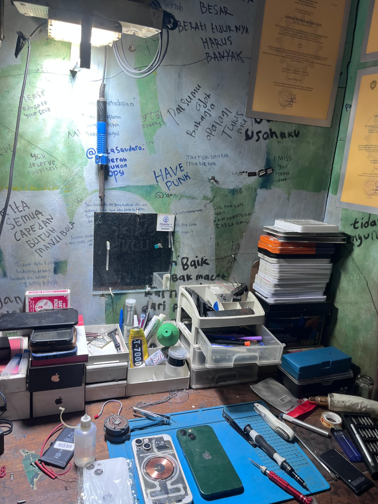
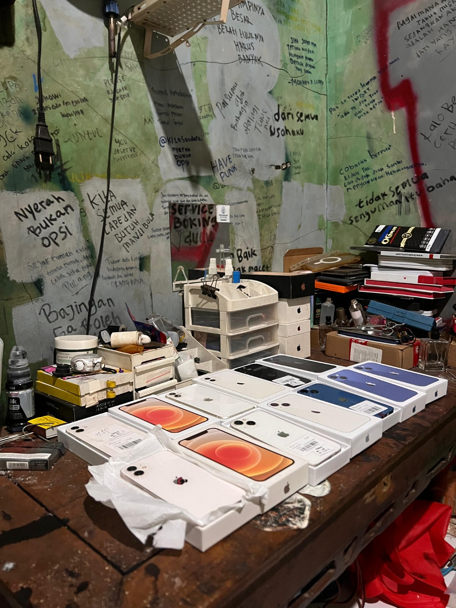
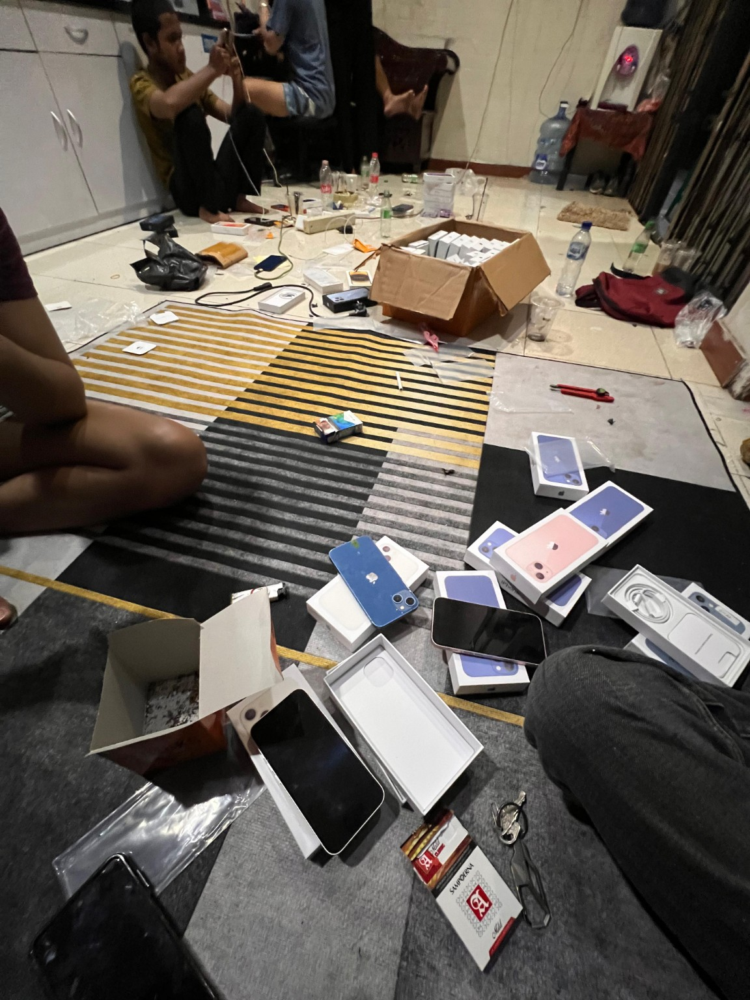
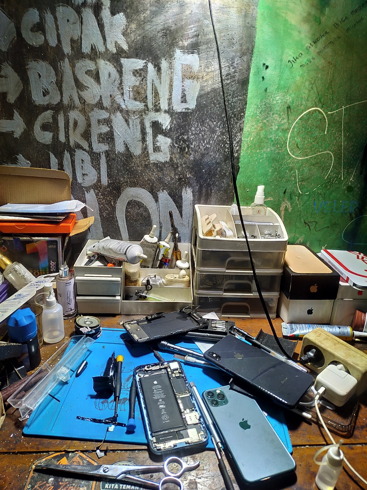
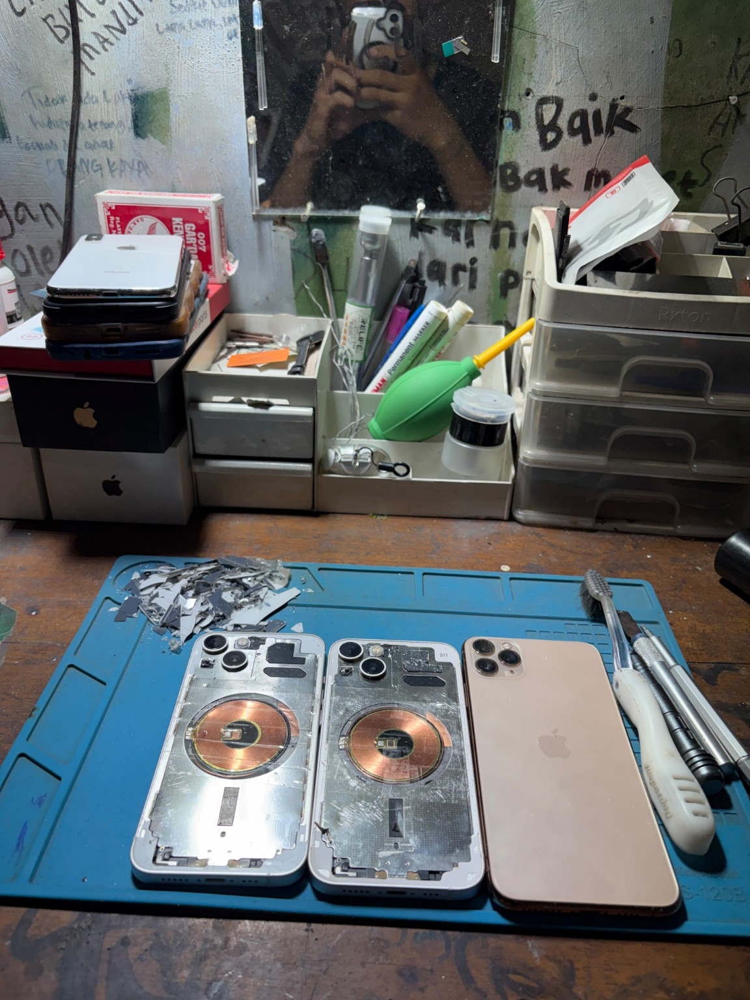

Workshop / Process
Galeri Pekerjaan
Dokumentasi suasana workshop, proses repair, diagnostic, dan unit yang ditangani.







GARAGE TB menangani perbaikan iPhone, troubleshooting hardware, board repair, microsoldering, diagnostic, serta jual beli unit dengan pendekatan teknis dan detail.

Fokus pada diagnosis, pengerjaan, dan pengujian perangkat.
Layar, baterai, charging, kamera, housing, dan komponen pendukung.
Diagnosis dan perbaikan masalah logic board dengan teknik mikrosoldering.
Pemeriksaan software dan hardware untuk mencari sumber kerusakan.
Pekerjaan komponen kecil pada board menggunakan alat teknisi khusus.
Unit iPhone untuk kebutuhan pemakaian maupun upgrade perangkat.
Pengujian fungsi perangkat setelah pengerjaan.
GARAGE TB dibangun dengan gaya kerja workshop: perangkat diperiksa, masalah dicari, kemudian ditangani berdasarkan kondisi unit. Area kerja dan proses teknisi menjadi bagian dari cerita kami.
Dokumentasi suasana workshop, proses repair, diagnostic, dan unit yang ditangani.




Kirim tipe iPhone dan keluhan/kerusakannya untuk pemeriksaan awal.